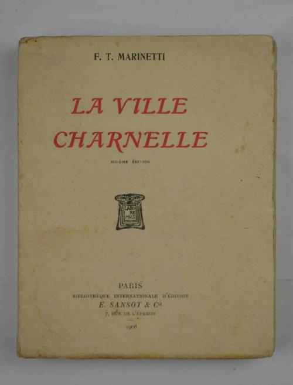
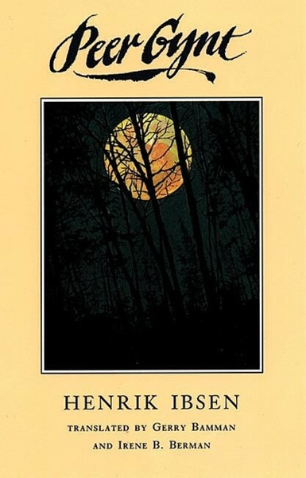

22:35 · 12 OPERE
I nuovi fascismi dell'epoca contemporanea.
Il filo del discorso
Dr Divago invita a interrogare la persistenza di forme di dominio e obbedienza oltre le dittature del Novecento. La sua tesi è che l’indifferenza verso passato e futuro e la concentrazione narcisistica sul presente possano rendere meno visibili meccanismi autoritari adattati a linguaggi più persuasivi. Il confronto fra 1984 e Il mondo nuovo distingue coercizione manifesta e conformismo interiorizzato. Alla riduzione dell’esistenza al calcolo dell’interesse, il relatore oppone misura, giustizia e dignità umana. Gli esempi di scrittori isolati o poco riconosciuti introducono la questione del rapporto fra cultura e società. Fuga dalla libertà di Fromm costituisce il passaggio centrale: l’abbandono della responsabilità personale viene collegato alla trasformazione dell’individuo in automa sociale. Le figure dell’uomo di latta, di Pinocchio e di Peer Gynt rendono concreta la domanda su ciò che permette di diventare se stessi. Un passo di Cioran sulla chiusura della scuola di Atene accompagna infine la critica dell’obbligo di credere. La conclusione rivendica il valore della vita oltre la sopravvivenza e i bisogni imposti. Il paragone fra fascismo e presente e i giudizi sulla società restano l’interpretazione politica e filosofica proposta dal relatore, senza equivalenza automatica fra regimi storici e istituzioni contemporanee.
I libri nel discorso

Il cinque maggio
Identificazione probabile
Copertina della raccolta Tutte le poesie: BUR · Tutte le poesie · a cura di Luca Danzi, 2012
Copertina autentica della raccolta BUR 2012 curata da Luca Danzi, che contiene Il cinque maggio alle pp. 427–438. Il componimento è un’ode, non una monografia intitolata Tutte le poesie.
Il nome Manzoni e il richiamo ai posteri e all’ardua sentenza rendono riconoscibile l’ode; titolo non pronunciato.
Passaggio 1:43 ↗ · Fonti e libro ↗
Pensieri
Identificazione probabile
Copertina: UTET · a cura di Bruno Nacci · 2021
Copertina autentica dell’edizione di riferimento, non attribuita all’esemplare del video.
La formula francese sull’io odioso è attribuita a Pascal; il richiamo ai Pensieri resta probabile.
Passaggio 2:43 ↗ · Fonti e libro ↗
I fratelli Karamazov
Identificazione probabile
Copertina: Newton Compton · I Mammut Gold · edizione di riferimento
La ragione euclidea terrestre attribuita a Dostoevskij suggerisce il discorso di Ivan nei Fratelli Karamazov; titolo non pronunciato.
Passaggio 3:08 ↗ · Fonti e libro ↗
1984
Copertina: Newton Compton · edizione illustrativa
Autore e titolo sono espliciti nel confronto fra le due distopie.
Passaggio 4:40 ↗ · Fonti e libro ↗
Il mondo nuovo
Copertina della raccolta: Mondadori · Oscar Moderni · 2016
L’immagine mostra il volume Mondadori che riunisce Il mondo nuovo e Ritorno al mondo nuovo. Il collegamento nel video riguarda il primo romanzo, per allusione al titolo inglese; non identifica un’edizione usata dal relatore.
Brave New World è nominato esplicitamente, con il nome di Huxley deformato dalla trascrizione automatica.
Passaggio 4:40 ↗ · Fonti e libro ↗
Il contratto sociale
Identificazione probabile
Copertina: Laterza · Economica · ristampa 2023 · edizione di riferimento
La frase sulla nascita libera e sulle catene è accompagnata dal nome Rousseau e dal 1762; titolo non pronunciato.
Passaggio 5:22 ↗ · Fonti e libro ↗
All’automobile da corsa (À mon Pégase)
Identificazione probabile
Copertina della raccolta francese La Ville charnelle: E. Sansot & Cie · La Ville charnelle · 1908, esemplare recante Sixième édition
Fotografia autentica della brossura Sansot 1908 con indicazione Sixième édition. Contiene l’originale francese À mon Pégase; non è una copertina autonoma della versione italiana All’automobile da corsa e non è attribuita alla prima tiratura.
Il verso di Marinetti sul dio di una razza d’acciaio suggerisce il componimento, senza titolo pronunciato.
Passaggio 9:25 ↗ · Fonti e libro ↗
Fuga dalla libertà
Copertina: Mondadori, 2022
Titolo italiano, Escape from Freedom, autore e anno 1941 sono espliciti.
Passaggio 12:38 ↗ · Fonti e libro ↗
Il mago di Oz
Copertina: BUR Ragazzi · 2000
Immagine autentica dell’opera, controllata visivamente; l’edizione di riferimento non è attribuita al filmato.
Sono richiamati il mago di Oz e l’uomo di latta che desidera un cuore.
Passaggio 14:34 ↗ · Fonti e libro ↗
Le avventure di Pinocchio. Storia di un burattino
Copertina: Gangemi · illustrato da Franco Staino, 2009
Immagine autentica dell’opera, controllata visivamente; l’edizione di riferimento non è attribuita al filmato.
Pinocchio è richiamato per il desiderio di diventare un bambino vero.
Passaggio 14:43 ↗ · Fonti e libro ↗
Peer Gynt
Copertina: Theatre Communications Group · traduzione inglese, 1993
Immagine autentica dell’opera, controllata visivamente; l’edizione di riferimento non è attribuita al filmato.
Ibsen e Peer Gynt sono nominati nella lettura dell’individualità mancata.
Passaggio 16:39 ↗ · Fonti e libro ↗
Sommario di decomposizione
Copertina: Adelphi · Biblioteca Adelphi 328, 1996
Immagine autentica dell’opera, controllata visivamente; l’edizione di riferimento non è attribuita al filmato.
Titolo e autore precedono la lettura del passo sull’anno 529.
Passaggio 17:43 ↗ · Fonti e libro ↗